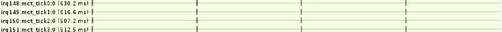
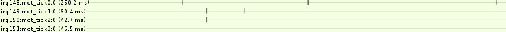

Tick，即周期性产生的 timer 中断事件，可用于系统时间管理、进程信息统计、低精度 timer 处理等等。这样就会有一个问题，那就是在系统空闲的时候也还是周期性的产生中断，系统会被周期性的唤醒导致功耗的增加，这对于追求低功耗的嵌入式设备来说是很难接受的。为此，内核开发者提出了动态时钟的概念，即在系统空闲阶段停掉周期性的时钟达到节省功耗的目的。内核可以通过配置项 CONFIG_NO_HZ 及 CONFIG_NO_HZ_IDLE 来打开该功能，这样在系统空闲的时候就可以停掉 tick 一段时间，但并不是完全没有 tick 了，当有除了 idle 进程之外的其它进程运行的时候会恢复 tick 。
Tick 事件 clock_event_device clock_event_device，代表一个可以产生时钟事件的硬件时钟设备，这样的时钟设备就像单片机的定时器，可以对它编程设置要触发的定时时间，在定时时间到达的时候产生中断，它可以工作在周期模式或者单触发模式。周期模式就是周期性的产生 timer 中断事件，这和 tick 的定义很像。
clock_event_device 结构定义如下：
1 2 3 4 5 6 7 8 9 10 11 12 13 14 15 16 17 18 19 20 21 22 23 24 25 26 27 28 29 30 31 struct clock_event_device { /* 回调函数指针，在硬件时钟设备的中断服务程序中调用 */ void (*event_handler)(struct clock_event_device *); / * 设置下一个定时时间，以 counter 的 cycle 数值为参数 */ int (*set_next_event)(unsigned long evt, struct clock_event_device *); / * 设置下一个定时时间，要设置的定时时间是 ktime 格式，要配合 CLOCK_EVT_FEAT_KTIME 标记使用 */ int (*set_next_ktime)(ktime_t expires, struct clock_event_device *); ktime_t next_event; u64 max_delta_ns; u64 min_delta_ns; u32 mult; u32 shift; enum clock_event_mode mode; unsigned int features; unsigned long retries; void (*broadcast)(const struct cpumask *mask); void (*set_mode)(enum clock_event_mode mode, struct clock_event_device *); void (*suspend)(struct clock_event_device *); void (*resume)(struct clock_event_device *); unsigned long min_delta_ticks; unsigned long max_delta_ticks; const char *name; int rating; int irq; const struct cpumask *cpumask; struct list_head list; struct module *owner; }
SMP 系统，每个 CPU 都有一个只属于自己的 local timer 用于提供时钟事件服务，在 CPU 启动的时候通过调用 percpu_timer_setup 函数完成初始化工作。以三星 exynos7420 平台为例，percpu_timer_setup 函数最终调用 exynos4_local_timer_setup 函数来初始化每个 CPU 的 local timer ，配置和注册 clock_event_device。
1 2 3 4 5 6 7 8 9 10 11 12 13 14 15 16 17 18 19 20 21 22 23 24 25 26 27 28 29 30 31 32 33 34 35 36 37 38 39 40 41 42 43 44 45 46 47 48 49 50 51 52 53 54 55 56 57 58 59 60 static irqreturn_t exynos4_mct_tick_isr(int irq , void * dev_id ) { struct mct_clock_event_device *mevt = dev_id; struct clock_event_device *evt = mevt->evt; exynos4_mct_tick_stop(mevt , 0) ; evt->event_handler(evt ) ; return IRQ_HANDLED; } static DEFINE_PER_CPU(struct irqaction , percpu_mct_irq ) = { .flags = IRQF_TIMER | IRQF_NOBALANCING , / * 中断处理程序 * / .handler = exynos4_mct_tick_isr , }; static int exynos4_local_timer_setup(struct clock_event_device * evt ) { struct mct_clock_event_device * mevt; unsigned int cpu = smp_processor_id() ; mevt = this_cpu_ptr(&percpu_mct_tick ) ; mevt->evt = evt; mevt->base = EXYNOS4_MCT_L_BASE(cpu ) ; / * 每个 CPU local timer 的名字分别为 mct_tick0 , mct_tick1 ... mct_tick7 * / snprintf(mevt->name, sizeof(mevt->name), "mct_tick %d", cpu); evt->name = mevt->name; evt->cpumask = cpumask_of(cpu ) ; / * 属于哪个 CPU * / / * 设置下次触发的时间，即把时间编程到定时器 * / evt->set_next_event = exynos4_tick_set_next_event ; / * 设置工作模式，例如周期模式，单触发模式等 * / evt->set_mode = exynos4_tick_set_mode ; / * 支持周期模式和单触发模式 * / evt->features = CLOCK_EVT_FEAT_PERIODIC | CLOCK_EVT_FEAT_ONESHOT ; evt->rating = 450; tick_base_cnt = 0; if (!soc_is_exynos5433() ) { tick_base_cnt = 1; exynos4_mct_write(tick_base_cnt , mevt ->base + MCT_L_TCNTB_OFFSET) ; } / * exynos7420 每个 CPU 的 local timer 都是使用的 SPI 类型中断 * / if (mct_int_type == MCT_INT_SPI ) { struct irqaction * mct_irq = this_cpu_ptr(&percpu_mct_irq ) ; mct_irq ->dev_id = mevt; evt->irq = mct_irqs [MCT_L0_IRQ + cpu]; irq_set_affinity(evt ->irq , cpumask_of (cpu ) ); enable_irq(evt ->irq ) ; } else { enable_percpu_irq(mct_irqs [MCT_L0_IRQ], 0) ; } / * 配置和注册 clock_event_device * / clockevents_config_and_register(evt , clk_rate / (tick_base_cnt + 1) , 0xf, 0x7fffffff); return 0; }
Exynos7420 平台 local timer 使用的是 SPI 类型的中断，它可以直接唤醒 idle 状态的 CPU，这样就不需要使用 broadcast framework 了。MTK 平台 CPU 的 local timer 一般使用 PPI 中断，它不具有唤醒处于 idle 状态的 CPU 的能力，所以需要一个 global HW timer 作为 broadcast tick，由它来服务每个 CPU，例如将 tick 事件广播到 CPU，唤醒 CPU 等等。
tick_device tick_device，tick 设备，是对 clock_event_device 及其工作模式的封装：
1 2 3 4 struct tick_device { struct clock_event_device *evtdev ; enum tick_device_mode mode ; };
tick_device_mode 只有两种模式，TICKDEV_MODE_PERIODIC 和 TICKDEV_MODE_ONESHOT，即周期模式和单触发模式。在 clock_event_device 注册的时候，tick_device 通过 tick_check_new_device 和 tick_setup_device 函数绑定一个属于该 CPU 且精度最高的 clock_event_device。这样，tick_device 工作在 TICKDEV_MODE_PERIODIC 模式时可以产生周期性的时钟事件，传统意义上的 tick 就是这么来的。周期模式下，clock_event_device 的 event_handler 被设置为 tick_periodic ，每个 tick 事件到来时 tick_periodic 就会被调用，它会通过 update_process_times 函数进行系统时间的更新、到期 hrtimer 的处理、TIMER_SOFTIRQ 软中断处理、进程信息更新及负载均衡等等。
模拟 tick 事件 低分辨率定时器 低分辨率定时器是基于 HZ 来实现的，精度为 1/HZ，内核 HZ 一般配置为 100，那么低分辨率定时器的精度就是 10ms。对定时器精度要求不高的内核模块还在大量使用低分辨率定时器，例如 CPU DVFS，CPU Hotplug 等。内核通过 time_list 结构体来描述低分辨率定时器。
高精度定时器 高精度定时器可以提供纳秒级别的定时精度，以满足对时间精度要求严格的内核模块，例如音频模块，内核通过 hrtimer 结构体来描述高精度定时器。在系统启动的开始阶段，高精度定时器只能工作在低精度周期模式，在条件满足之后的某个阶段就会切换到高精度单触发模式。上面所说的 tick_periodic 函数，最后会调用 hrtimer_run_pending 函数来判断是否可以切换到高精度模式。另外，动态时钟也是在这里判断和切换的。流程如下：
tick_periodic -> update_process_times -> run_local_timers -> raise_softirq(TIMER_SOFTIRQ) == run_timer_softirq -> hrtimer_run_pending
1 2 3 4 5 6 7 8 9 10 11 12 13 14 15 16 17 18 19 20 21 22 23 24 25 26 27 28 29 30 31 32 33 34 35 36 37 38 39 40 41 42 43 void hrtimer_run_pending(void ) { if (hrtimer_hres_active() ) return; if (tick_check_oneshot_change(!hrtimer_is_hres_enabled () )) hrtimer_switch_to_hres() ; } int tick_init_highres(void ) { return tick_switch_to_oneshot(hrtimer_interrupt ) ; } static int hrtimer_switch_to_hres(void ) { int i, cpu = smp_processor_id() ; struct hrtimer_cpu_base *base = &per_cpu(hrtimer_bases , cpu ) ; unsigned long flags; if (base->hres_active) return 1 ; local_irq_save(flags ) ; if (tick_init_highres() ) { local_irq_restore(flags ) ; printk(KERN_WARNING "Could not switch to high resolution " "mode on CPU %d\n" , cpu); return 0 ; } base->hres_active = 1 ; for (i = 0 ; i < HRTIMER_MAX_CLOCK_BASES; i++) base->clock_base[i ] .resolution = KTIME_HIGH_RES; tick_setup_sched_timer() ; retrigger_next_event(NULL) ; local_irq_restore(flags ) ; return 1 ; }
最终，通过 hrtimer_switch_to_hres 完成低精度周期模式到高精度单触发模式的切换。tick_device 的工作模式变成了 TICKDEV_MODE_ONESHOT，其 clock_event_device 的 event_handler 被替换为 hrtimer_interrupt。至此，tick_device 不能再定期产生 tick 事件了，但是系统还离不开 tick 事件，所以内核通过一个 hrtimer 模拟了 tick，这个是在 tick_setup_sched_timer 函数中完成的。
1 2 3 4 5 6 7 8 9 10 11 12 13 14 15 16 17 18 19 20 21 22 23 24 25 26 27 28 29 30 31 32 33 34 35 36 37 void tick_setup_sched_timer(void) { struct tick_sched *ts = &__get_cpu_var(tick_cpu_sched); ktime_t now = ktime_get(); hrtimer_init (&ts-> ts -> hrtimer_set_expires (&ts-> for (;;) { hrtimer_forward (&ts-> hrtimer_start_expires (&ts-> HRTIMER_MODE_ABS_PINNED); if (hrtimer_active(&ts-> break; now = ktime_get(); } #ifdef CONFIG_NO_HZ_COMMON if (tick_nohz_enabled) ts -> #endif }
可以看到，sched_timer 就是模拟 tick 使用的 hrtimer，在其回调函数 tick_sched_timer 中会设置下次触发时间为 tick_period，这样就可以定期产生 tick 事件了。另外，还会通过 tick_sched_handle 函数调用 update_process_times 函数，相信很多人对 u pdate_process_times 很眼熟，前面说的系统时间的更新、到期 hrtimer 的处理、TIMER_SOFTIRQ 软中断处理、进程信息更新及负载均衡等等就是由它完成的。所以说利用 hrtimer 很完美的模拟了 tick 。
1 2 3 4 5 6 7 8 9 10 11 12 13 14 15 16 17 18 19 20 21 static enum hrtimer_restart tick_sched_timer(struct hrtimer * timer ) { struct tick_sched *ts = container_of(timer , struct tick_sched , sched_timer ) ; struct pt_regs *regs = get_irq_regs() ; ktime_t now = ktime_get() ; tick_sched_do_timer(now ) ; if (regs) tick_sched_handle(ts , regs ) ; hrtimer_forward(timer , now , tick_period ) ; return HRTIMER_RESTART; }
tickless tickless，即上面所说的动态时钟，之所以被称为 tickless，估计是为了更好的和 tick 联系起来。另外，并不是真的没有 tick 了，只是在系统空闲的时候停掉 tick 一段时间。使能了动态时钟之后，周期时钟的开关就由 idle 进程控制，当满足条件时就可以停掉 tick 若干时间，这个流程如下：
cpu_idle_loop -> tick_nohz_idle_enter -> __tick_nohz_idle_enter -> tick_nohz_stop_sched_tick
最后，通过 tick_nohz_stop_sched_tick 停止掉若干 tick。
1 2 3 4 5 6 7 8 9 10 11 12 13 14 15 16 17 18 19 20 21 22 23 24 25 26 27 28 29 30 31 32 33 34 35 36 37 38 static void cpu_idle_loop(void ) { while (1 ) { tick_nohz_idle_enter() ; while (!need_resched() ) { check_pgt_cache() ; rmb() ; if (cpu_is_offline(smp_processor_id () )) arch_cpu_idle_dead() ; local_irq_disable() ; arch_cpu_idle_enter() ; if (cpu_idle_force_poll || tick_check_broadcast_expired() ) { cpu_idle_poll() ; } else { if (!current_clr_polling_and_test() ) { stop_critical_timings() ; rcu_idle_enter() ; arch_cpu_idle() ; WARN_ON_ONCE(irqs_disabled () ); rcu_idle_exit() ; start_critical_timings() ; } else { local_irq_enable() ; } __current_set_polling() ; } arch_cpu_idle_exit() ; } tick_nohz_idle_exit() ; schedule_preempt_disabled() ; } }
停掉 tick 若干时间，那么这个若干时间是怎么得来的呢？系统此时处于空闲状态只有 idle 进程在运行，还要处理可能产生的中断，但是无法获知除了定时器中断以外的其它中断何时产生，而定时器第一个即将到期的中断时间是可以得到的，在这个时间到期之前都可以停掉 tick，由此得到需要停掉的 tick 数。另外，停掉 tick 的时间不能超过 clock_event_device 的 max_delta_ns，不然可能会造成 clocksource 的溢出。
回顾一下 tick 事件产生时的工作流程。首先是中断处理函数 exynos4_mct_tick_isr 被运行，它会调用 clock_event_device 的 event_handler，即 hrtimer_interrupt，hrtimer_interrupt 会调用 __run_hrtimer 处理到期的 hrtimer， tick_sched_timer 这个 hrtimer 的回调函数 tick_sched_timer 被调用，tick_sched_timer 会把下次唤醒时间设置为 tick_period，相当于恢复了周期时钟。如果没有别的进程需要运行，恢复周期时钟的做法显然是不合理的，我们需要的是在第一个定时时间到来之前停止若干 tick。 通过前面的内容可以了解到 tick 产生时会触发 TIMER_SOFTIRQ 软中断，所以内核在软中断的 irq_exit 函数中做了些手脚，解决了刚才所说的周期时钟恢复的问题，流程如下：
irq_exit -> tick_irq_exit -> tick_nohz_irq_exit -> __tick_nohz_idle_enter -> tick_nohz_stop_sched_tick
看到了熟悉的身影 tick_nohz_stop_sched_tick，通过它又可以停掉若干的 tick。
tick_irq_exit 函数如下：
1 2 3 4 5 6 7 8 9 10 11 12 static inline void tick_irq_exit(void ) { #ifdef CONFIG_NO_HZ_COMMON int cpu = smp_processor_id() ; if ((idle_cpu(cpu ) && !need_resched() ) || tick_nohz_full_cpu(cpu ) ) { if (!in _interrupt() ) tick_nohz_irq_exit() ; } #endif }
如果有别的进程需要运行，need_resched() 就会为 1，就不能进入 tick_nohz_irq_exit 函数，也就无法停掉若干 tick，下次唤醒的时间就还是一个 tick_period。
没有使能 tickless，tick 周期性产生，如下图所示：

配置了 tickless，tick 会被停掉若干时间，变得没有规律，如下图所示：

This is copyright.